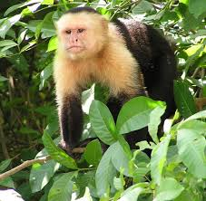
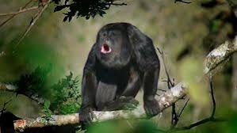
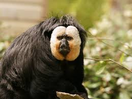
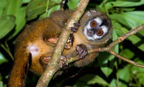
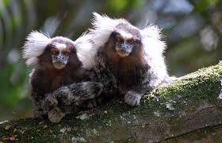

This family includes capuchins and squirrel monkeys. They are known for their intelligence and social behavior.
This family comprises howler monkeys, spider monkeys, and woolly monkeys. They are often characterized by their prehensile tails and are mostly arboreal.
This family includes sakis, uakaris, and titi monkeys. They have diverse diets and are adapted to various habitats.
This family consists of owl monkeys (or night monkeys), which are unique for being the only truly nocturnal monkeys.
This family includes marmosets and tamarins. They are smaller primates known for their cooperative breeding and social structures.
 Page 1
Intro Page
Page 3
Old world monkeys
Page 4
Lesser apes
Page 5
Great apes
Return
Project Explorer